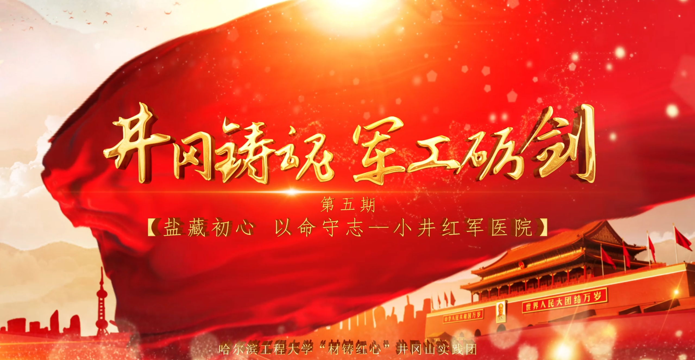

井冈铸魂 · 军工砺剑
五期实景微团课以井冈山精神与哈军工精神的内在联系为主线，从革命道路、制度基因、自主创新到青年使命，完成一场跨越时空的精神接力。

五期精神脉络
01 两山相望，一脉相承：从井冈山到哈军工的精神接力全国青少年井冈山革命传统教育基地中心广场
一座是罗霄山脉中的革命摇篮，一座是松花江畔的军工重镇。本课以两座“精神高山”的跨时空对话开篇，说明井冈山精神是源头活水，哈军工精神则是这股力量在新中国国防科技战线上的赓续。
忠诚、奋斗、创新与团结贯穿两种精神：从“星星之火，可以燎原”的坚定信念，到军工人听党指挥、以身许国；从艰苦斗争、自主探索，到汇聚集体力量攻克国防科技难关，变的是时代战场，不变的是报国初心。
02 支部建在连上，班排建在专业：从三湾改编看红色制度基因基地中心教室及走廊
三湾改编把党支部建在基层作战单位，确保党对军队的绝对领导直达每一名战士，使一支处于低谷的队伍重新凝聚。哈军工建校后把这一制度传统融入专业、学员队和班级，把政治方向贯穿人才培养全过程。
“又红又专”不是抽象口号：既要坚定对党忠诚、献身国防的政治品格，也要掌握解决实际问题的过硬本领。官兵平等、教学相长与组织关怀，共同构成哈军工红色制度基因的现实表达。
03 实事求是，勇闯新路茅坪八角楼
八角楼的一盏油灯见证了中国共产党人立足中国实际、探索革命道路的思想历程。理论创新并非闭门造车，而是源于走村入户、调查研究，是“不唯书、不唯上、只唯实”的求是作风。
哈军工建校之初同样不照搬现成模式，在国内基础薄弱、外部封锁重重的条件下首创尖端专业、探索国防科技人才培养体系。两处实践共同说明：唯有从实际出发、敢于走自己的路，才能不断打开新局面。
04 盐藏初心，以命守志小井红军医院及小井红军烈士墓
小井红军医院把井冈山精神具象为分盐救人、军民互助与舍身守密的历史记忆。张子清将珍贵食盐让给重伤战友，群众持续送来草药粮食，百余名伤员面对敌人宁死不屈，共同写下坚定信念与无私奉献。
这份“舍小我、顾大局”的品格，经陈赓、谢有法、李开湘等前辈融入哈军工办学，又在林俊德等军工科技工作者身上化为扎根戈壁、为国攻坚的长期坚守。
05 井冈星火，青春接力井冈山火炬广场
火炬广场是全系列的精神汇合点。井冈山先辈在围困中闯出救国道路，哈军工前辈在技术封锁中从零筑牢国防根基；今天，救国、固防的接力棒传到新时代军工青年手中。
从水下声呐、极地装备到全海深机器人，哈工程科研工作者在不同赛道延续自主攻关的传统。青年不必直面枪林弹雨，却要以专业所长破解关键技术难题，让井冈星火在强国建设的新征程中继续燃烧。